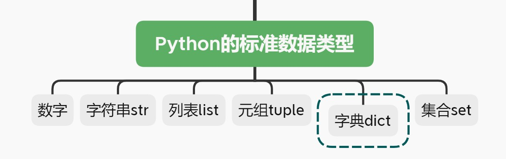
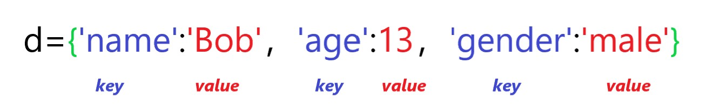

字典，寻寻觅觅-Python基础连载（十）
开篇

以前在查阅纸质字典时，有一种音序查字法，可以根据汉字的拼音将查询范围缩小到几页纸中，然后逐页查找目标字。也就说，一个拼音可以对应多个汉字。
本期所讲的字典数据类型，也是根据某种东西（key）去查询另一种东西（value），但与上述过程稍微有些不同，至于不同之处嘛，我写在文中咯。
需要说明的是，字典中的许多方法名都类似于列表中的方法名，大家可以对比着学习，同时也不要搞混了哦~
让我们开始吧！
初识字典
字典用{}包裹，比如d={'name':'Bob'，'age':13，'gender':'male'}
便是一个字典：

观察上面的字典d，可以归纳出字典的基本结构：
1 | :`前面的被称为`key`（键），比如`'name' |
键和值合起来被称为一个键值对，比如'name':'Bob'
各个键值对之间用逗号,分隔开。
可以根据key来查找对应的value：
1 | d={'name':'Bob','age':13,'gender':'male'} |
创建字典
- 方法**1.**使用
{}创建一个字典
【栗子1】创建一个空字典
1 | z={} |
【栗子2】创建一个非空字典
1 | zz={'height':188,'age':3,'city':'Mars'} |
- **方法2.**使用
dict()创建一个字典
【栗子1】创建一个空字典
1 | x=dict() |
【栗子2】创建一个非空字典
1 | #1.使用`变量名=值`的方法 |
- **方法3.**使用
dict.fromkeys()创建字典，常用于字典的初始化
1 | key=['a','b','c'] |
看，每个key对应的value都被初始化为[1,2,3]。
注意，若想要拿到初始化之后的结果，必须将其赋值给一个新的变量，看这个栗子：
1 | d={} |
正确的做法是这样的：
1 | d={} |
最后需要注意的是，若一个字典中有重复的key，则后面的key对应的value会将前面的key对应的value覆盖。看个栗子：
1 | d={'x':1,'y':2,'z':3,'x':4} |
字典的增删改查
和列表一样，字典也是可变数据类型，因此对字典的修改操作同样也是直接在原字典上进行。
1.增
可以直接使用dict[key]=value来添加一个新的键值对，举个栗子：
1 | z={'a':1,'b':2} |
还有一种update()方法，它可以将一个字典添加到另外一个字典中：
1 | d1={'a':1,'b':2,'c':3} |
2.删
del
使用del可以删除某个键值对：
1 | z{'a': 1, 'b': 2, 'c': 3} |
也可以直接删除整个字典（不是变空，而是抹去）:
1 | z |
pop()
删除某个键值对，并返回被删除键值对的value。
1 | d={'x':1,'y':2} |
popitem()
每次运行都只能删除字典最末尾的元素，并且在字典变空时,若继续使用popitem()则会报错：
1 | s={'a':1,'b':2,'c':3} |
clear()
用于清空整个字典，直接看栗子
1 | d=dict(zip(['a','b'],list(range(2)))) |
3.改
如果你尝试向字典中增加键值对，而恰巧你所要添加的key已经存在于字典中了，那么此时你新添加key对应的value会覆盖原来的value，也就达到了修改的目的。
1 | d |
4.查
可以使用key来查询对应的value，就像查纸质字典一样，只不过在Python的字典中，一个key只能对应一个value，而纸质字典中一个key(拼音)可以对应多个value(具有相同拼音的汉字)。这便是开篇中提到的问题的答案。
1 | dd |
但是注意：如果要查询的key并不存在，那么就会报错：
1 | dd |
那能不能在key不存在时不要报错呢？
Python的字典提供了get()方法，可以指定在查找失败时返回的值，而不再报错。
使用了get()方法后，当key不存在时，默认返回None，可以手动修改返回值。下面以栗子来说明具体的使用方法：
【栗子1】使用默认返回值None
1 | dd |
【栗子2】修改返回值
1 | dd |
字典的遍历方法
想要对字典进行遍历，首先想到的方法是：
先拿到key，然后用key去查询其对应的value。在外面套一层循环用来重复此操作，即可完成遍历。
需要知道的是：
通过dict.keys()可以拿到所有的key
1 | 通过``dict.values()`可拿到所有的`value |
所以我们可以这样遍历：
1 | d={'a':1,'b':2,'c':3} |
输出
1 | a = 1 |
事实上，直接写成下面这样也可以得到相同的结果：
1 | d={'a':1,'b':2,'c':3} |
原因是：
在对字典进行遍历时，默认就是对所有的key进行遍历操作，所以这里的for key in d就等价于for key in d.keys()。
另外，Python中的字典还提供了items()方法，用来获取键值对：
1 | d |
所以，我们也可以通过items()方法先获取键值对，然后对键值对进行遍历，从而也就完成了对整个字典的遍历操作。请看下面的栗子：
1 | d={'a':1,'b':2,'c':3} |
输出
1 | a = 1 |
看，和上面的输出是一样的。
你甚至还可以做拆包(在下面会解释什么是拆包)，直接同时获取key和value，遍历之，也可以得到上面的输出结果：
1 | d={'a':1,'b':2,'c':3} |
所谓拆包，就是将一个可迭代对象中的元素拆解成多个变量。
以列表这个可迭代对象为例来说，我们将多个元素用列表存储是为了减少变量的个数，而拆包的目的正好相反，它是将一个列表中的多个元素分别用一个单独的变量来表示，从而变量的个数会增加。
举个栗子就清楚啦：
【栗子1】对字符串进行拆包
1 | s='abc' |
【栗子2】对列表进行拆包
1 | lis=[1,2] |
现在你已经了解了什么是拆包，我们可以来解释一下for k,v in d.items()所做的事情了：
首先d.items()的内容为dict_items([('a', 1), ('b', 2), ('c', 3)])，这是一个可迭代对象，我们先来验证这一点：
1 | from collections.abc import Iterable |
返回值为True，是可迭代对象，验证完毕（ps:忘记验证方法的同学可以翻看列表那一期的内容）。
所以这段代码
1 | d={'a':1,'b':2,'c':3} |
所做事情的具体过程如下：
1 | 在做第1次循环时，k,v=d.items()等价于k,v=('a',1)，于是k='a',v=1，打印输出'a'=1 |
字典推导式
和列表一样，字典也有推导式，其存在的原因同样是为了使得代码更加简洁。
问题：互换一个字典中的key和value。比如{'a':1,'b':2,'c':3}会变成{1:'a',2:'b',3:'c'}。
若使用for循环，则代码风是这样的：
1 | d={'a':1,'b':2,'c':3} |
输出
1 | {1: 'a', 2: 'b', 3: 'c'} |
但是如果使用了字典推导式，则代码风是这样子的：
1 | d={'a':1,'b':2,'c':3} |
代码看起来是不是清爽很多？
当然，这并不是强制性的。如果你习惯了普通的循环操作，完全可以无视这种推导式的写法。不过我相信，当你熟悉推导式的写法之后会爱上它的简洁与优雅。
以上就是字典的基本用法，和列表一样，字典也是编程一大利器，需要好好掌握，大家加油！